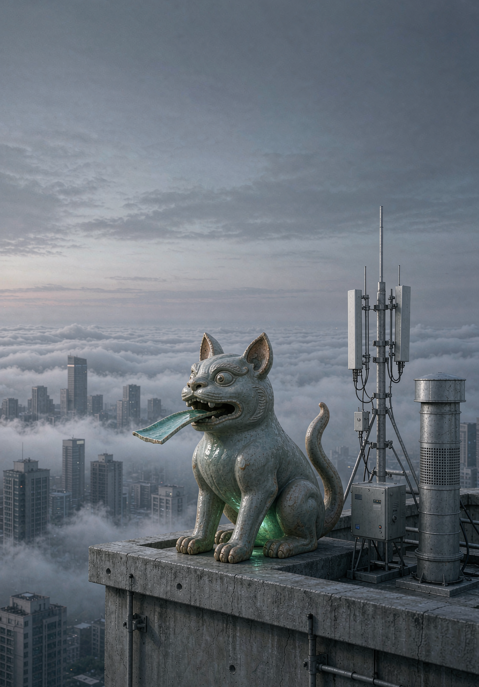

03 / 未来 · IP 与器物
云口 · 守匠
人不再住有瓦脊的房子，最高处换成了设备层、天线和云。
瓦猫跟了上去——还是蹲在最高处，还是张着嘴。
只是这一次，它吞的是云，吐出来的是一片带釉的瓦。
瓦猫跟了上去——还是蹲在最高处，还是张着嘴。
只是这一次，它吞的是云，吐出来的是一片带釉的瓦。


云口 / 云腹 / 云瓦 · 素胎 + 云青釉 · 概念示意
云口 可换
口上套一只可替换的陶环。吞什么，由换上哪一只口决定。
云腹 是窑
腹中空，便是窑。吞下去的云在这里被烧成釉，一点热气从缝里漏出来。
云瓦 归还
从底座屙出一片带釉的瓦。一片瓦，就是一段被烧干净的云。
素胎青灰
#8B8F86
云青
#6E8C7B
陶土
#A9613C
窑变朱
#A63A2B
吞——炼——还
瓦猫能做的事，从来只有一件：
把外面的东西，变成屋里的东西。
把外面的东西，变成屋里的东西。